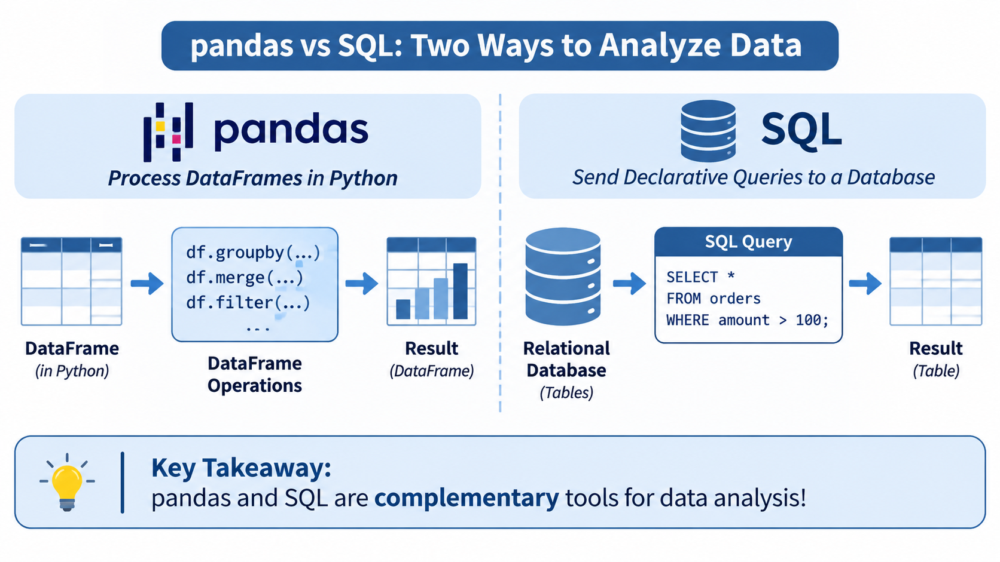

pandas (Python Library):
pd.DataFrame).df.groupby().mean()).SQL (Database Language):
pandas vs SQL
table be the data table, let’s compare common operations across paradigms:| Operation | pandas (Python) | SQL (RD) |
|---|---|---|
| Select columns | df[['col1', 'col2']] |
SELECT col1, col2 FROM table |
| Filter rows | df[df['age'] > 30] |
SELECT * FROM table WHERE age > 30 |
| Sort values | df.sort_values('date', ascending=False) |
SELECT * FROM table ORDER BY date DESC |
| Aggregate | df.groupby('cat').mean() |
SELECT cat, AVG(val) FROM table GROUP BY cat |
| Join tables | pd.merge(df1, df2, on='id', how='inner') |
SELECT * FROM t1 JOIN t2 ON t1.id = t2.id |
CUSTOMERS TABLE
┌────┬──────────┬───────────┐
│ ID │ Name │ City │
├────┼──────────┼───────────┤
│ 1 │ Alice │ Phnom Penh│
│ 2 │ Bob │ Siem Reap │
└────┴──────────┴───────────┘
│ (1-to-Many)
▼
ORDERS TABLE
┌─────┬─────────────┬────────┐
│ Ord │ Customer_ID │ Amount │
├─────┼─────────────┼────────┤
│ 101 │ 1 │ 45.50 │
│ 102 │ 1 │ 120.00 │
│ 103 │ 2 │ 15.00 │
└─────┴─────────────┴────────┘Primary keys: identifier of items/records in entity tables. Foreign key: reference to links of primary keys created in liked tables.
.db files.INTEGER, TEXT, REAL, DATETIME).customers table.customers: stores customer profile information (customer_id, name, city, signup_date).orders: stores transaction records (order_id, customer_id, order_date, amount, status). CUSTOMERS TABLE
┌────┬──────────┬───────────┐
│ ID │ Name │ City │
├────┼──────────┼───────────┤
│ 1 │ Alice │ Phnom Penh│
│ 2 │ Bob │ Siem Reap │
└────┴──────────┴───────────┘
│ (1-to-Many)
▼
ORDERS TABLE
┌─────┬─────────────┬────────┐
│ Ord │ Customer_ID │ Amount │
├─────┼─────────────┼────────┤
│ 101 │ 1 │ 45.50 │
│ 102 │ 1 │ 120.00 │
│ 103 │ 2 │ 15.00 │
└─────┴─────────────┴────────┘Orders table.customer_id).orders.customer_id references customers.customer_id).NOT NULL, and UNIQUE constraints.INTEGER, REAL, TEXT, DATE).--| echo: true
--| code-fold: true
CREATE TABLE products (
product_id INTEGER PRIMARY KEY,
product_name TEXT NOT NULL,
price REAL CHECK(price >= 0),
category TEXT
);
CREATE TABLE order_items (
order_id INTEGER,
product_id INTEGER,
quantity INTEGER NOT NULL CHECK(quantity > 0),
PRIMARY KEY (order_id, product_id),
FOREIGN KEY (order_id) REFERENCES orders(order_id),
FOREIGN KEY (product_id) REFERENCES products(product_id)
);CHECK, NOT NULL, FOREIGN KEY) act as automated database guardrails protecting data quality at insertion time.Persistence: Unlike Python objects stored in volatile RAM, SQL inserts persist data immediately to disk (or secure storage).
Inserting Multiple Rows:
pd.concat(), but with strict schema enforcement.Updating Records (UPDATE):
Deleting Records (DELETE):
WHERE clause in an UPDATE or DELETE statement modifies or deletes every single row in the table!SELECT statement with your WHERE condition first to verify affected rows.| Category | Description | Key Commands |
|---|---|---|
| DQL (Data Query Language) | Retrieve data from databases | SELECT |
| DDL (Data Definition Language) | Define and modify table structures | CREATE, ALTER, DROP |
| DML (Data Manipulation Language) | Insert, update, and delete records | INSERT, UPDATE, DELETE |
| TCL (Transaction Control Language) | Manage database transactions | COMMIT, ROLLBACK, SAVEPOINT |
pandas:
SQL Equivalent Query:
Anatomy:
SELECT: Choose columns.FROM: Specify table source.LIMIT: Restrict output row count.SQL:
WHERE:
=, != or <>IN('Phnom Penh', 'Siem Reap')BETWEEN '2025-01-01' AND '2025-12-31'LIKE 'Srey%'.SQL Sorting:
Ordering Rules:
ASC (default): ascending order (\(1 \to 10\), \(A \to Z\)).DESC: descending order (\(10 \to 1\), \(Z \to A\)).CASEpandas way: Similar to np.select() or custom lambda functions applied with .apply().PostgreSQL or Snowflake) handles the computation, reducing data transfer and processing time.COUNT(*) counts all rows (including NULLs).COUNT(column) ignores NULL values in that column.df['city'].isna()df['city'].notna()len(df) vs df['city'].count()df['city'].fillna('Unknown')NULL represents an unknown or missing value and is never equal to anything—not even another NULL.pandas:COUNT(): Count records.SUM(): Total sum of numeric values.AVG(): Arithmetic mean.MIN() / MAX(): Extrema values.GROUP BY with aggregate functions:FROM -> GROUP BY -> Aggregate Func -> SELECT -> ORDER BY.The Dilemma: How do we filter based on an aggregated result (like total sales > $500)?
WHERE filters individual rows before grouping.HAVING filters groups after aggregation.SQL Example:
SQL Clause Execution Order: \[\text{FROM} \longrightarrow \text{WHERE} \longrightarrow \text{GROUP BY} \longrightarrow \text{HAVING} \longrightarrow \text{SELECT} \longrightarrow \text{ORDER BY} \longrightarrow \text{LIMIT}\]
CUSTOMERS ORDERS
┌────┬───────┐ ┌─────┬─────────────┬────────┐
│ id │ name │ │ ord │ customer_id │ amount │
├────┼───────┤ ├─────┼─────────────┼────────┤
│ 1 │ Alice │◄──┤ 101 │ 1 │ 45.50 │
│ 2 │ Bob │ │ 102 │ 2 │ 120.00 │
└────┴───────┘ └─────┴─────────────┴────────┘
▲ (matched on customer_id)customers and orders.JOIN operations using matching keys (customer_id).INNER JOIN: Returns only rows with matching keys in both tables.
(Drops customers with zero orders and orders with invalid customer IDs).
customers c and orders o assign short aliases to the tables to easily access their columns.| Join Type | SQL Syntax | pandas Equivalent |
|---|---|---|
| Inner Join | FROM t1 JOIN t2 ON ... |
pd.merge(t1, t2, how='inner', on='id') |
| Left Join | FROM t1 LEFT JOIN t2 ON ... |
pd.merge(t1, t2, how='left', on='id') |
| Right Join | FROM t1 RIGHT JOIN t2 ON ... |
pd.merge(t1, t2, how='right', on='id') |
| Outer Join | FROM t1 FULL OUTER JOIN t2 ON ... |
pd.merge(t1, t2, how='outer', on='id') |
JOIN unexpectedly multiply rows (cartesian explosion)? Check COUNT(*) before and after joins.SELECT id, COUNT(*) FROM t GROUP BY id HAVING COUNT(*) > 1).NULL values resulting from unmatched left joins (WHERE col IS NULL).SELECT, WHERE, and LIMIT.GROUP BY and HAVING.INNER JOIN or LEFT JOIN.SELECT, WHERE, ORDER BY, and LIMIT to filter and sort data efficiently.GROUP BY for partition summaries and HAVING to filter aggregated groups.INNER JOIN and LEFT JOIN matching keys.INSERT, UPDATE, and DELETE.🥳 Yeahhhh 🥂!!!
Any question? Else, we take a break!
🥳 Yeahhhh 🥂!!!
Let’s take a break!